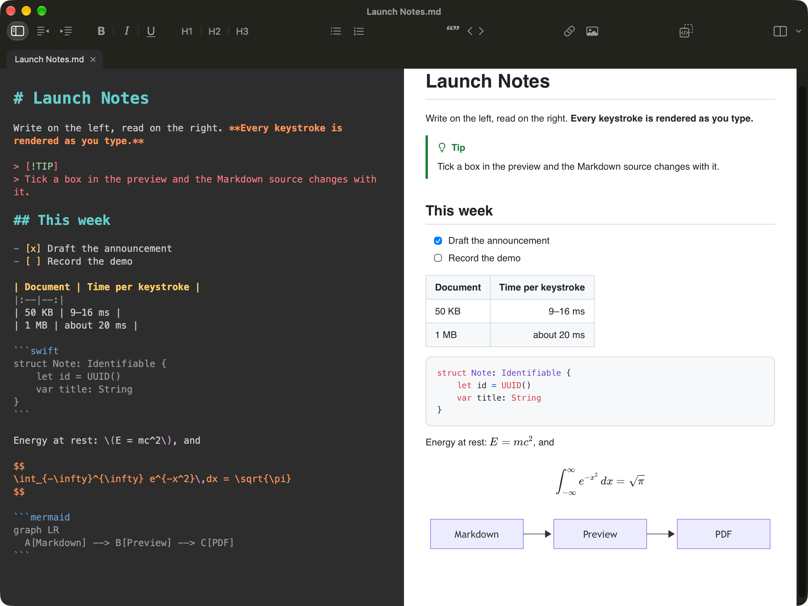
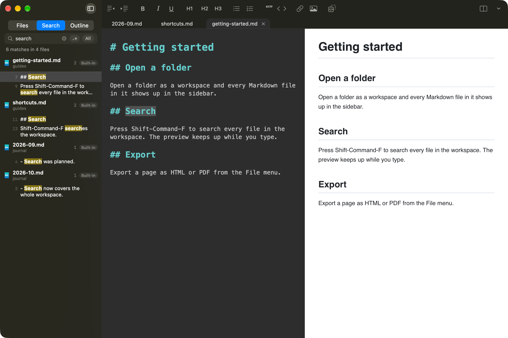

Interactive preview
Tick a task box in the preview and the Markdown source is edited to match. Scrolling stays in sync both ways.
A new MacDown for Apple Silicon: a free, open-source Markdown editor for macOS 26, written in Swift as the spiritual successor to MacDown. Dark source on the left, live preview on the right, re-rendered in milliseconds as you type.
$ brew install --cask xuanji86/tap/macdown2

MacDown2.0 shares an idea with MacDown, not its code. Every layer was chosen for the Mac of today.
Time to update the preview after one edit, layout included, against MacDown 0.7.3. Lower is better.
| Test | MacDown2.0 | MacDown 0.7.3 | Faster |
|---|---|---|---|
| 12.6 KB document | 3.1 ms | 8.6 ms | 2.8× |
| 50 KB document | 3.2 ms | 10.7 ms | 3.3× |
| 1 MB document | 7.5 ms | 78.5 ms | 10× |
| 200 formulas | 4.1 ms | 495.5 ms | 121× |
| 300 code blocks | 3.8 ms | 48.3 ms | 13× |
Median per-edit preview update, including layout. Measured on an Apple M5 Pro running macOS 27.2, offscreen: the clock runs from the edit until the preview is laid out, and the preview paints on the next display frame. MacDown 0.7.3 reloads the whole page on every keystroke; MacDown2.0 re-renders only the sections that changed.
Tick a task box in the preview and the Markdown source is edited to match. Scrolling stays in sync both ways.
GFM tables, task lists, footnotes, GitHub alerts and ==highlight==.
KaTeX math, highlight.js code blocks and Mermaid diagrams.
YAML or TOML front matter, hidden or shown as a table.
Bold and italic work next to CJK punctuation.
Finder-style file tree, tabs, full-text search across the folder and an outline.
UTF-8, UTF-16, GB18030, Shift_JIS, Windows-1252, Mac Roman. Files changed elsewhere reload.
HTML, paginated PDF and print. Exported HTML is sanitized.
Press Space in Finder to see the rendered document.
Preview of callouts, divs and cross-references. Code cells are highlighted, never run.
Seven editor and eight preview themes, chosen independently or following the system.
English and Simplified Chinese interface, set per app.
A sidebar with Finder’s own icons, tabs above the editor, search over the whole folder with a regex switch, and an outline of the current document.

Open files and folders in the app, or render HTML and PDF headless, without a window or a Dock icon. The Homebrew cask installs it for you.
$ brew install --cask xuanji86/tap/macdown2
Requires macOS 26 or later; one build for Apple Silicon and Intel. Free and open source. The app is not notarized: the first time you open a downloaded copy, go to System Settings › Privacy & Security and click Open Anyway. The Homebrew cask clears the quarantine flag for you. Install notes in the README